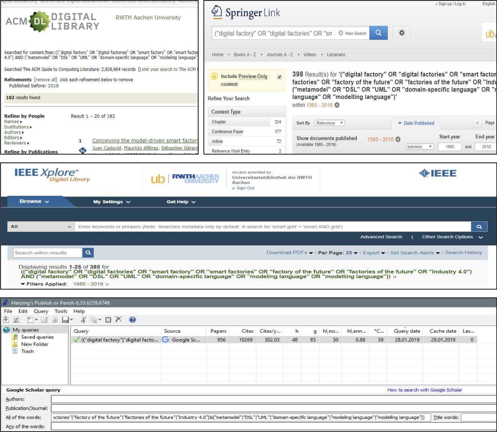

Industrial revolutions always introduced step changes to manufacturing. The first industrial revolution (18th to 19th century) advanced production from manual to machine-driven manufacturing, introduced factories, and enabled leveraging steam power for production. The second industrial revolution (1870 to 1914) introduced electric power to enable mass production of goods using the concept of interchangeable parts. The third industrial revolution (ca. 1980 to 2010) describes the transition from analog to digital (mostly isolated) production systems. Industry 4.0 is the fourth industrial evolution focusing on integrating digitized cyber-physical production systems with processes and stakeholders to optimize the complete value-added chain. Originally, it has been announced as part of the high-tech strategy of the German Federal Ministry for Education and Research. However, the essence of Industry 4.0 has become an international phenomenon as the Japanese Industrial Value Chain Initiative, the Advanced Manufacturing Initiative in the United States, the Chinese Made in China 2025 strategy, Manufacturing 3.0 in South Korea, and the national Catapult research center on High Value Manufacturing in the United Kingdom indicate.
Industry 4.0 is a term coined 2011 at Hannover fair as the fourth industrial revolution that arises from interconecting all parts of the manufacturing value-added chain. It also has become the title of a high tech strategy project of the German Federal Ministry of Education and Research and can be defined as
This “fourth industrial revolution” raises new challenges for future manufacturing which are driven by four disruptions:
We conducted a systematic mapping study to uncover how modeling in a broad sense, i.e., leveraging techniques from software engineering, to artificial intelligence, to formal methods, is applied tackle these challenges. This website accompanies the study including data until February 2017 and its update comprising publications until Feburary 2018.
Adopting a detailed search strategy over multiple digital libraries, 1466 papers – published until February 2017 – were initially identified as possibly relevant. Of these, 222 papers were selected and categorized using a particular classification scheme. In the study, we present the concerns addressed by modeling community for Industry 4.0, how these are investigated, where these are published, and by whom. The resulting research landscape can help to understand, guide, and compare research in this field. In particular, this paper identifies the Industry 4.0 challenges addressed by the modeling community but also the challenges that seems to be less investigated.
For better transparency and replicability, this website provides
We hope that this data supports better comprehension of the systematic mapping study and of its results.
The paper is available from
We updated the study to include results until Feburary 2018. For this update, we investigated 2998 additional publications out of which 186 additional publications were included into the mapping study. Below you find the updated data sets:
To prevent limiting your data collection on only specific modeling techniques applied in Industry 4.0, we developed the following query, consisting of of terms related to manufacturing of Industry 4.0 and the objects of modeling research.
("digital factory" OR "digital factories"
OR "smart factory" OR "smart factories"
OR "factory of the future" OR "factories of the future"
OR "Industry 4.0")
AND
("metamodel" OR "DSL" OR "UML" OR "domain-specific language"
OR "modeling language" OR "modelling language")
Essentially, this is a conjunction of two disjunctions: The first part of the conjunction captures terms related to Industry 4.0. The second part captures terms representing the objects of modeling research. As we conducted a full-text search with this clause, we omitted including synonyms for “DSL” or “modeling language”. Papers contributing to modeling should at least use these terms in either related work or the referenced literature. Although we cannot exclude omitting a small number of possibly relevant publications that do not provide such discussions, searching this way yields better results than just searching titles and abstracts. Moreover, we also did not enforce any inferior year-limit and included papers published until February 2018. Where such complex logical conditions were not supported, we searched for parts of the query and joined the results manually. For ACM Digital Library we could reuse the query as is (modulo minor changes to its concrete syntax). For Google Scholar we used its advanced search mode to separate to split the query into five queries, each containing one exact phrase of the modeling terms (i.e., “modeling language”, “metamodel”, etc.) and at least one of the domain terms (i.e., “Industry 4.0”, “digital factory”, etc.). We extracted the results using Harzing’s Publish or Perish software to extract results. Due to its limitation to ca. 1.000 citations per query, we downloaded the citations in multiple parts using inferior and superior year limits. We manually merged the resulting lists of citations and removed the Scholar-internal duplicates obtained by our process manually. Through this, we aim to minimize the issues of using Google Scholar for structured literature retrieval (e.g., non-commutativity of logical disjunctions) while benefiting from its wealth of provided publications. IEEE Xplore enforces a limit of 40 search terms, which did not affect our query and supports the use of nested Boolean queries through its advanced search, hence data retrieval was straightforward. Similarly, retrieving citations from Scopus, SpringerLink, and Web of Science did not require any changes to the query as all three libraries support nested Boolean queries through their advanced search.
|  |
|
Fig. 1. Example representations of our search query reformulated for different databases (the figures have been produced after the article and consequently show higher numbers of results).
|
Although we cannot exclude omitting a small number of possibly relevant publications that do not provide such discussions, searching this way yields better results than just searching titles and abstracts. Moreover, we also did not enforce any inferior year-limit and included papers published until February 2018. Where such complex logical conditions were not supported, we searched for parts of the query and joined the results manually. For ACM Digital Library we could reuse the query as is (modulo minor changes to its concrete syntax). For Google Scholar we changed the representation of the query’s Boolean operators and used Harzing’s Publish or Perish software to extract results. Due to its limitation to ca. 1.000 citations per query, we downloaded the citations in two parts out of which one includes citations until $2017$ and the other all later citations. IEEE Xplore enforces a limit of 40 search terms, which did not affect our query and supports the use of nested Boolean queries through its advanced search, hence data retrieval was straightforward. Similarly, retrieving citations from Scopus, SpringerLink, and Web of Science did not require any changes to the query as both supports nested Boolean queries through their advanced search. Applying our query – with the explained operative modifications – to ACM Digital Library, Google Scholar, IEEE Xplore, Scopus, SpringerLink, and Web of Science.
A more detailed description of our data collection process and its results is available here.